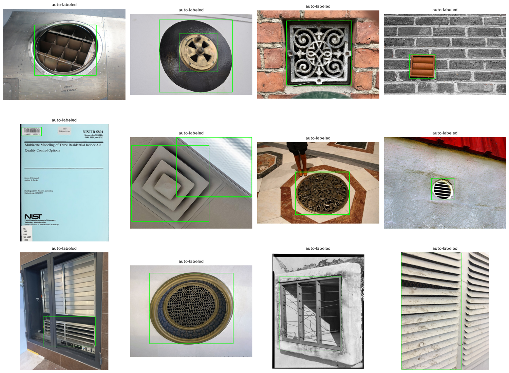
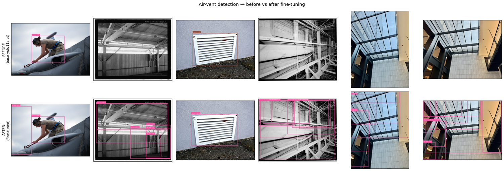
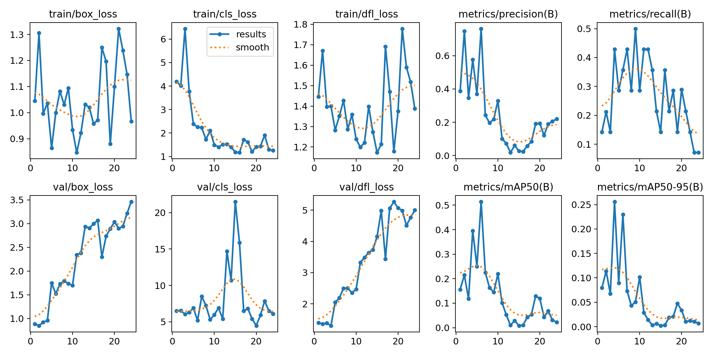

10 · Fine-tuning a custom detector
Teaching YOLO a class COCO never had — air vents — with auto-built data, trained on a DGX Spark
The task
Every module so far ran a pretrained model. This one trains one — the capstone skill, because real projects almost always need a class the off-the-shelf models don’t have. Here that class is air vents: not in COCO, so module 01’s detectors are blind to it. We fine-tune a YOLO detector to find vents, and — the interesting part — we do it without hand-labelling a single image, then train on the DGX Spark.
The data engine: this repo, labelling itself
Fine-tuning needs labelled data, and labelling is the expensive, boring bottleneck of applied CV. So we manufacture the dataset from capabilities built earlier in this very curriculum — the “distill an open-vocabulary model into a specialist” workflow that module 01 promised:
- Source — pull Creative-Commons vent images from Wikimedia Commons (no API key).
- Filter (zero-shot) — score each image with CLIP (module 02) against vent prompts vs distractor prompts (smokestacks, landscapes, documents, cars, people…) and keep only the vent-like ones. This gate is essential — a raw “air vent” web search is mostly not air vents.
- Auto-label — run Grounding DINO (module 01) with vent text prompts; its boxes (after a size-sanity filter) become YOLO labels.
- Fine-tune — train YOLO on the result, on the Spark.
So three earlier modules become a data engine for a fourth. No human ever draws a box.

Auto-sourced, auto-labelled data is noisy — the CLIP gate and box filter remove most junk, but some mislabelling survives, and the val labels are themselves model-generated. So the mAP below measures how well YOLO distilled Grounding DINO, not human ground truth. The qualitative before/after and the honest “what’s needed for production” note matter more than the number. The path to highly reliable is more images and a pass of human label cleanup — or your own photos, which the pipeline accepts directly.
Why the DGX Spark
Inference runs anywhere; training is where compute and memory matter, and it’s where this project’s scale-up box earns its place: the GB10 Grace-Blackwell with ~120 GB unified memory (ARM64, CUDA 13). Training also happens to be the operation you’d repeat as the dataset grows and the model gets larger, so it belongs on the Spark — which is also the robotics deployment target these perception skills feed. (See Cross-platform validation for how the same code runs on both machines.)
The training ran inside the Spark’s NGC PyTorch container; the dataset was built on the local 3090 Ti (Grounding DINO + CLIP) and shipped over.
Results — before vs after
The headline: the base model has no “air vent” class, so it detects zero vents. The fine-tuned model localises them.

Fine-tuned air-vent detector (trained on the DGX Spark GB10)
| Model | Class | mAP@50 | mAP@[.5:.95] | Precision | Recall |
|---|---|---|---|---|---|
| YOLO11-s (base, COCO) | air_vent | — | — | — | — |
| YOLO11-s (fine-tuned) | air_vent | 0.40 | 0.26 | 0.58 | 0.43 |
The base model has no air_vent class, so it cannot score on this task at all (—): it detects zero vents. The fine-tuned model was trained for 80 epochs on 33 auto-labelled images (~0.5 s/epoch on the GB10). Metrics are on a 9-image / 14-instance val split whose labels are themselves Grounding DINO pseudo-labels, so they measure distillation fidelity, not human truth — read them together with the qualitative before/after.

- From zero to a working detector. The base model cannot detect a vent — there is no such class — so “before” is a blank. After 80 epochs on 33 auto-labelled images (trained in under a minute on the GB10 at ~0.5 s/epoch), the model localises vents and louvers the base model is blind to. That capability did not exist an hour earlier and required no manual labelling.
- The numbers are modest, and honestly so. mAP@50 ≈ 0.40 on a 9-image val split — respectable for a few dozen noisy auto-labelled examples, but not “production reliable”. The val labels are themselves pseudo-labels, so treat the figure as distillation fidelity, not ground truth.
- The workflow is the deliverable. Source → CLIP-filter → Grounding-DINO-label → fine-tune is a repeatable recipe for any new class. Scaling the image count, a short human label-cleanup pass, and adding on-site photos are the obvious, high-leverage levers to push reliability up from here.
- The Spark did the training; the laptop built the data. The exact same code trains on ARM64 / GB10 / CUDA 13 as on the x86 / 3090 Ti — the cross-platform story in practice.
How to reproduce
# 1) Build the dataset locally (Grounding DINO + CLIP on the GPU)
uv run python modules/10-finetuning/prepare_data.py --max-images 200
# 2) Ship it to the Spark and train inside the NGC container
# (Tailscale SSH alias `spark`; dataset tar'd over, docker-cp'd into mjlab-dev)
python finetune.py --data data/airvents/data.yaml --model yolo11s.pt --epochs 80 --out outWhere fine-tuning (this way) falls short
- Data volume & noise — a few dozen auto-labelled images demonstrates the workflow and a real before→after, but “highly reliable” needs hundreds of cleaner examples.
- Pseudo-label ceiling — the student can’t exceed the teacher; Grounding DINO’s mistakes become the model’s mistakes. A short human cleanup pass is the highest-leverage next step.
- Domain match — web vents ≠ your building’s vents; a handful of on-site photos added to the set would lift real-world reliability fast.